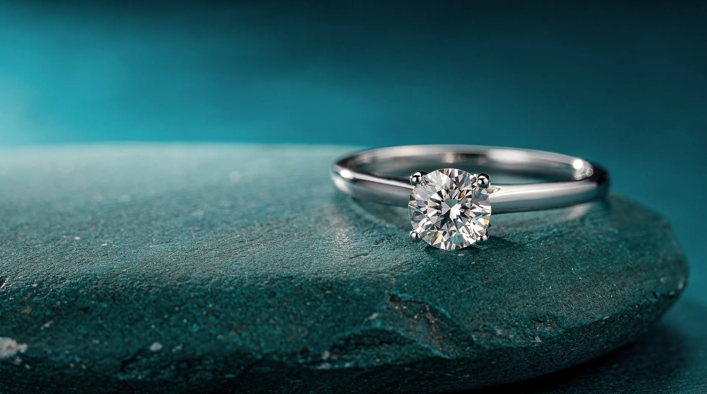
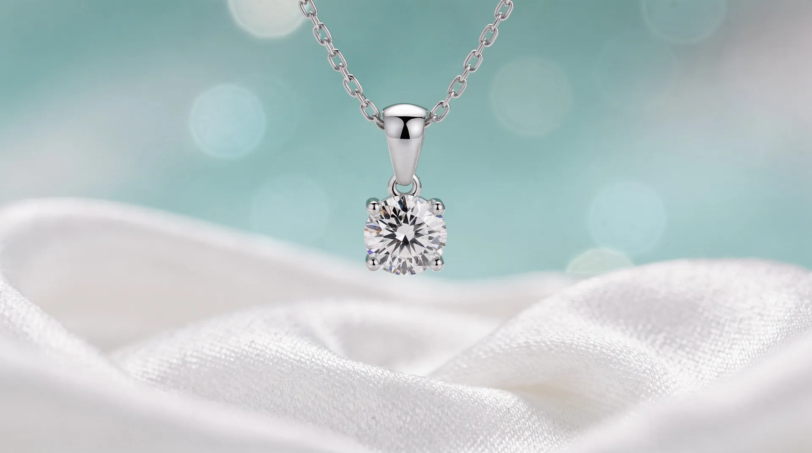

925 Sterling Silver
Set with moissanite or lab-grown diamonds.

The Lab
“a delicate silver pendant, one moissanite stone”

Describe the piece you imagine, and watch it take shape — yours to refine until it feels right.

Live try-on
Open your camera and wear your design before it exists — with a live quote that takes shape as you refine it.
Open the LabMaterials
Set with moissanite or lab-grown diamonds.

Set with lab-grown diamonds.

Set with lab-grown diamonds.
Designed by you. Tried on live. Quoted as you watch.